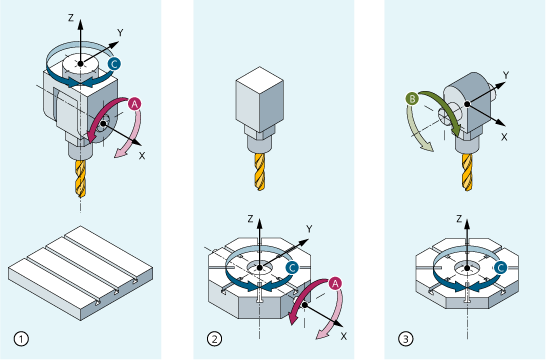

The traversing movements of the programmed orientations are determined primarily by the type of machine. For three-, four-, and five-axis type transformations with TRAORI, the rotary axes or pivoting linear axes describe the orientation movements of the tool.
Changes in the position of the rotary axes involved in the orientation transformation will induce compensating movements on the remaining machine axes. The position of the tool tip remains unchanged.
Orientation movements of the tool can be programmed using the rotary axis identifiers A…, B…, C… of the virtual axes as appropriate for the application either by entering Euler or RPY angles or directional or surface normal vectors, normalized vectors for the axis of rotation of a taper or for intermediate orientation on the peripheral surface of a taper.
In the case of kinematic transformation with TRANSMIT, TRACYL and TRAANG, the controller maps the programmed Cartesian coordinate system traversing movements to the traversing movements of the real machine axes.
Either the tool or the tool table can be rotatable with up to two rotary axes. A combination of swivel head and rotary table (single-axis in each case) is also possible.
① | Machine type 1 with axis sequence CA
|
② | Machine type 2 with axis sequence AC
|
③ | Machine type 3 with axis sequence BC
|
Machine type | Programming of orientation |
|---|---|
Three-axis transformation machine types 1 and 2 | Programming of tool orientation only in the plane, which is perpendicular to the rotary axis. There are |
Four-axis transformation machine types 1 and 2 | Programming of tool orientation only in the plane, which is perpendicular to the rotary axis. There are |
Five-axis transformation machine types 3 | Programming of orientation transformation. Kinematics with |
Generic 5/6-axis transformations
Machine type | Programming of orientation transformation |
|---|---|
Generic five/six-axis transformation machine types 4 | Programming of orientation transformation. Kinematics with |
When calling "generic three-, four-, and five/six-axis transformation", the basic orientation of the tool can also be transferred. The restrictions in respect of the directions of the rotary axes no longer apply. If the rotary axes are not exactly vertical to one another or existing rotary axes are not exactly parallel with the linear axes, "generic five-/six-axis transformation" can provide better results in respect of tool orientation.
For milling on turning machines or an axis that can be set for inclined infeed during grinding, the following axis arrangements apply by default in accordance with the transformation declared:
TRANSMIT | Activation of polar transformation |
|---|---|
Face machining in the turning clamp | A rotary axis |
TRACYL | Activation of the cylinder surface transformation |
|---|---|
Machining of grooves with any path on cylindrical bodies | A rotary axis |
TRAANG | Activation of the inclined axis transformation |
|---|---|
Machining with an oblique infeed axis | A rotary axis |
The machine moves in machine coordinates and is programmed with:
TRAORI | Activation of transformation |
|---|---|
PTP point-to-point traversing | Approach position in Cartesian coordinate system (MCS) |
CP | Path motion of Cartesian axes in the BCS |
STAT | Position of the articulated joints is dependent on the transformation |
TU | The angle at which the axes traverse on the shortest path |
PTP transversal with generic 5/6-axis transformation
The machine is moved using machine coordinates and the tool orientation, where the movements can be programmed both using round axis positions and using Euler and/or RPY angle vectors irrespective of the kinematics or the direction vectors.
Round axis interpolation, vector interpolation with large circle interpolation or interpolation of the orientation vector on a peripheral surface of a taper are possible in such cases.
The machine tool has at least five axes:
Three translatory axes for movements in straight lines, which move the operating point to any position in the working area.
Two rotary swivel axes arranged at a configurable angle (usually 45 degrees) allow the tool to swivel to positions in space that are limited to a half sphere in a 45-degree configuration.
See also:
Overview of transformation types